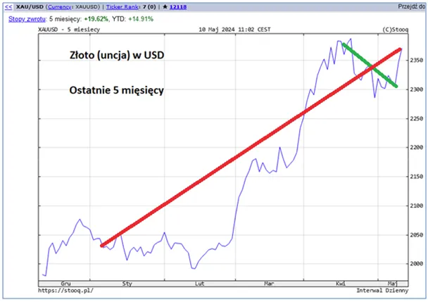
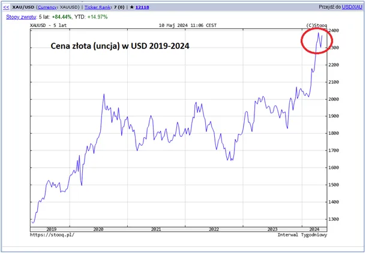
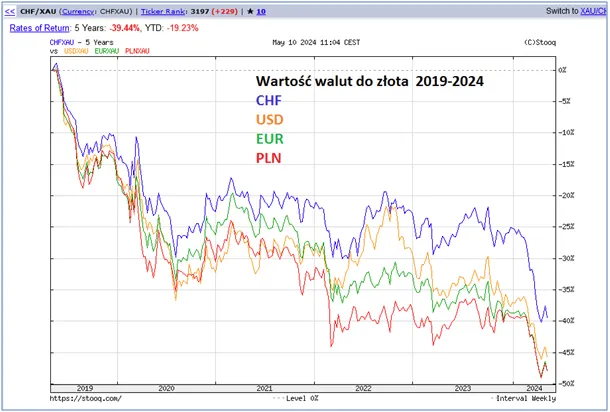

Złota majówka papierowego ministra.
Złoto z różnych powodów cieszy się uznaniem kobiet i mężczyzn. Kobiety obwieszone złotem czują się dostojnie i przyciągają uwagę, mężczyźni widzą w złocie prosty sposób na transfer dużego kapitału zarówno w czasie jak i w przestrzeni. W epoce przemysłowej złoto też okazało się niezastąpionym składnikiem nowoczesnej elektroniki. Wszystko to z powodu unikalnych cech złota, chemicznej obojętności, co pozwala bez ryzyka korozji przechowywać złoto przez wieki oraz dużej gęstości. Litrowy słoik mieszczący 1 kg wody lub około 7,5 kg stali pomieści aż 19,3 kg złota o wartości ok. 6 mln. złotych.
Złoto też jest metalem wyjątkowo miękkim i kowalnym, co pozwala łatwo z niego robić fantazyjną biżuterię. Przez majówkę słyszałem w mediach światowych silny "szum" o spadkach ceny złota, nazywanego antydolarem, co miało na celu poprawę nastrojów milionów drobnych "inwestorów" o krótkiej pamięci. Ten kosmetyczny spadek, zaznaczony na pierwszym wykresie na zielono to mała korekta po szalonym rajdzie cen złota w ostatnim półroczu.

Mówienie o cenie złota jest zasadniczo błędem. Musimy mówić o cenie pieniądza papierowego, która radykalnie spada. Spada, bo jest jego nadmiar w stosunku do faktycznego majątku, jaki posiadają wszyscy mieszkańcy Ziemi razem. Produkując pieniądze z niczego rządy w niewidzialny sposób przesuwają bogactwo od ludzi do swych skarbców, gdzie gromadzą złoto. Ludzie w sytuacji kryzysowej sprzedają swe złoto pozbywając się realnego majątku. Majątek ten jest też zgromadzony w nieruchomościach, w tym w gruntach, których ceny od przyjęcia waluty papierowej zmieniają się analogicznie do cen złota. Ceny usług i towarów na rynku reagują z kilkumiesięczną bezwładnością, bo towary na półkach są już zakontraktowane i czekają w magazynach na ich fizyczną sprzedaż.

Zatem nasi nowi "ukochani przywódcy" lansujący się na pogromców inflacji będą musieli się zmierzyć z tą bestią, która jeszcze w tym sezonie wyjdzie z szafy ministra finansów. Bestia inflacji oczywiście niczego tak się nie boi, jak kolejnej rekonstrukcji rządu i ofiary z jego nazwiska złożonej na stosie paska " headlines ".

Minister i jego banda dostaną sowitą odprawę, której wpływ na inflację będzie niemierzalny, bo zginie jak pyłek w rozdmuchanych wydatkach budżetowych. "Tematów zastępczych jest sporo, damy radę" jak to mówią na posiedzeniach nierządu. Z wykresu trzeciego jasno wynika, że jeśli ktoś "oszczędza" w walutach, obligacjach, itp. to od czasów przed covidowych połowę oszczędności "mole inflacji" mu zjadły.
Paweł Klimczewski